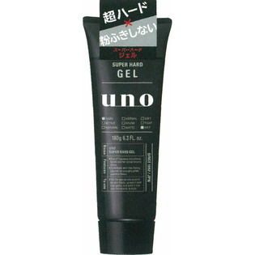

返回列表
产品名称：ウーノ スーパーハードジェル

資生堂 ウーノ スーパーハードジェル １８０ｇ
メーカー 資生堂
JANコード 4901872447046
商品の特徴
ベタつきやごわつきがなく、超強力にセットします。白い粉が出ず、水をつければ再整髪も可能です。無香料・無着色・ノンオイリー。
成分・分量
-
用法及び用量
＜使い方＞
適量を手のひらで十分にのばしてから、髪に均一になじませて整髪します。（部分的に多くつきすぎると、白い粉が出ることがあります。）